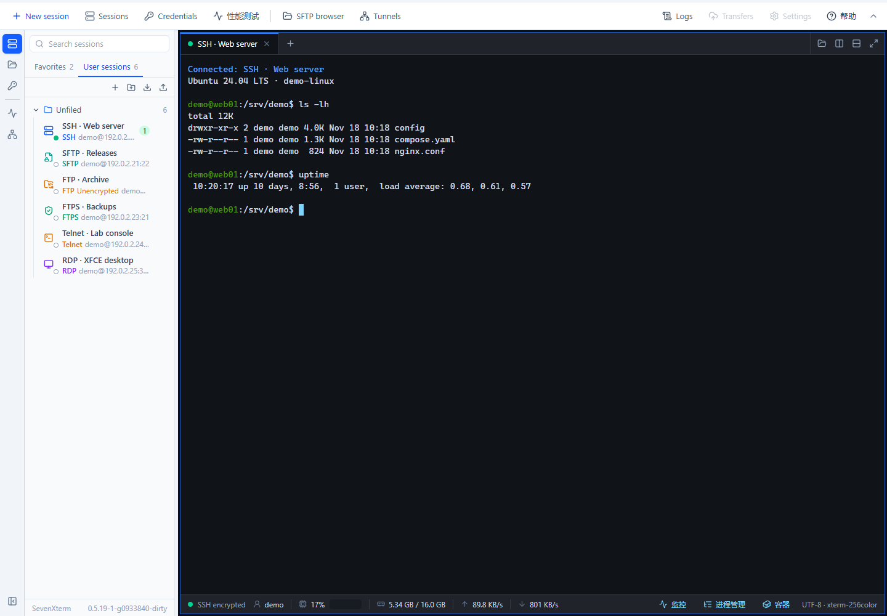

SSH · 多标签终端
在多个连接间切换，执行命令、浏览远端文件。
SEVENXTERM
远程终端、文件传输与桌面连接，配合容器监控、日志和命令行，完成日常远程工作。
01 / SESSION
查看 SSH 终端、文件传输、Telnet 控制台和 RDP / XRDP 远程桌面的操作界面与主要能力。
02 / CONTAINERS
连接 Docker / Podman，从资源异常找到线索，筛选日志，再进入容器检查。
01 / 资源监控
在清单中置顶常用容器，开启跟踪后持续观察资源趋势。
02 / 日志排查
实时跟随日志，按需高亮关键词，或只保留匹配的日志行。
ERROR|WARN筛选错误与警告日志
03 / 交互式命令
为运行中的容器打开交互式命令行，执行命令并读取输出。
nginx -v例如，检查容器内的服务版本
03 / FILES
SFTP、FTP 和 FTPS 共用双栏文件工作区；SSH Browser 提供随手可用的远端目录入口。
HOST MONITORING
从 SSH 会话打开主机监控，查看 Linux 资源趋势，按资源消耗定位并跟踪进程。
CONNECTIONS & TOOLS
保存会话、复用凭据、配置转发，或对 HTTP 服务做一次性能测试。
按操作系统选择可用的安装包。
64 位 · 运行 EXE 安装程序，或使用免安装版。
选择 Apple Silicon 或 Intel 的 DMG，打开后将应用拖入「应用程序」。
x86-64 · 解压 tar.gz 发布包后运行 SevenXterm。